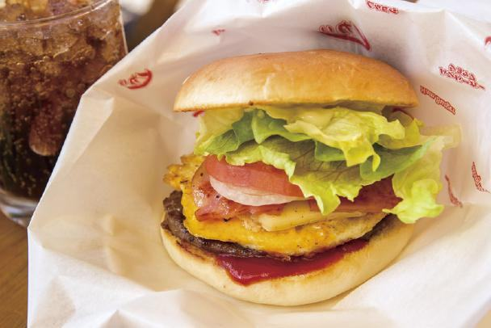
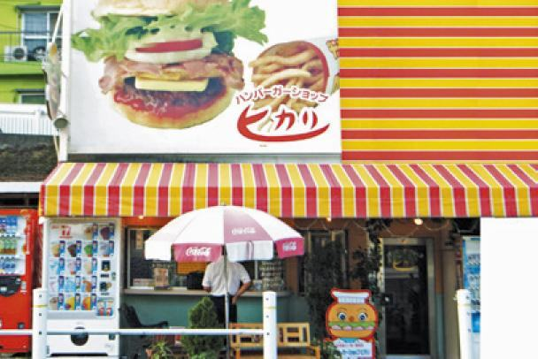
| 営業時間 | 10:00〜16:00（公式サイト。佐世保観光コンベンション協会の店舗ページは10:00〜17:00と記載） |
|---|---|
| 定休日 | 毎週水曜日、第2日曜日、第3木曜日（ほか年末年始・お盆休みあり） |
| 住所 | 長崎県佐世保市矢岳町1-1 |
| 予約 | 予約不要・席の予約は不可（カウンター7席のみ）。注文を受けてから作るため待ち時間が出る。 — ☎ 0956-25-6685 ／ 公式サイト |
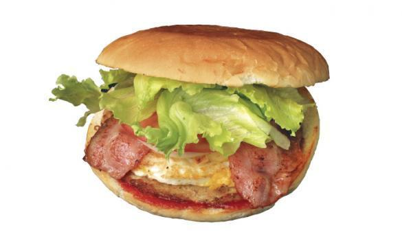
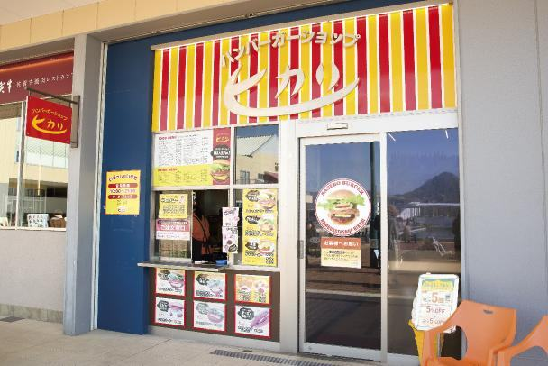
| 営業時間 | 10:00〜21:00（公式サイト。佐世保観光コンベンション協会の店舗ページはラストオーダー20:50と記載） |
|---|---|
| 定休日 | 年末年始のみ（公式サイト。佐世保観光コンベンション協会の店舗ページは1月1日・2日と記載。状況により変動あり） |
| 住所 | 長崎県佐世保市新港町3-1 |
| 予約 | 席の予約は不可。持ち帰りは電話で注文できる（最大17名分まで）。 — ☎ 0956-22-0321 ／ 公式サイト |
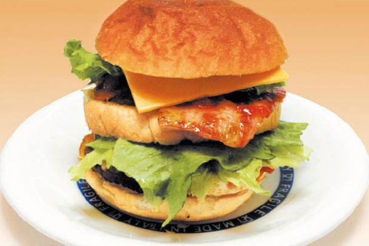
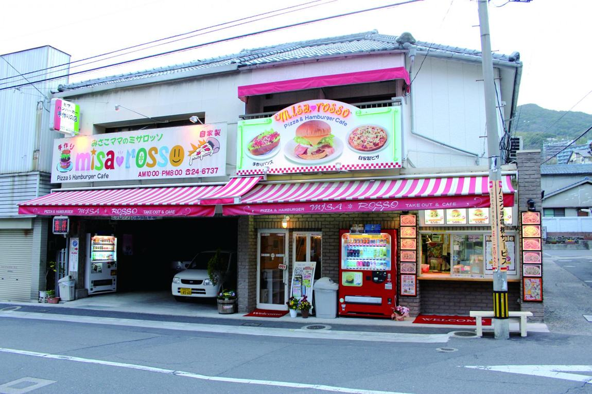
| 営業時間 | 10:00〜19:00（ラストオーダー19:00） |
|---|---|
| 定休日 | 火曜日・第4月曜日（祝日の場合は営業し翌日休み。2026年3月からこの形になった） |
| 住所 | 長崎県佐世保市万徳町2-15 |
| 予約 | 予約不可。持ち帰りは店頭での注文のみ。 — ☎ 0956-24-6737 ／ 公式サイト |
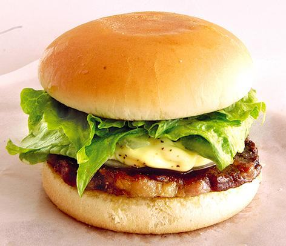
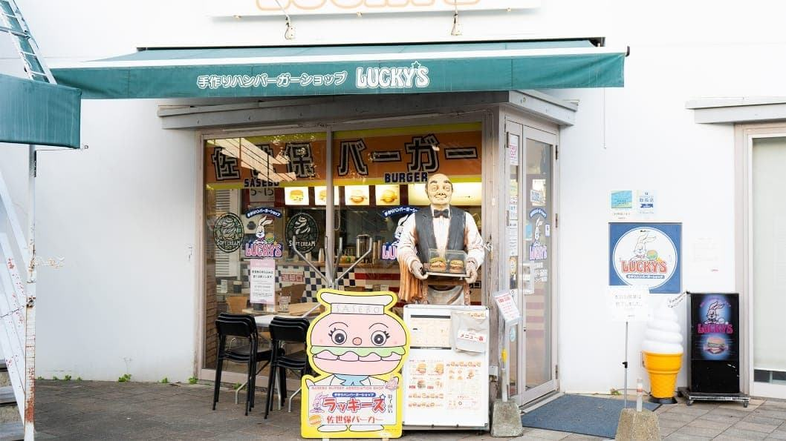
| 営業時間 | 10:00〜17:00（ラストオーダー16:30）（公式サイト。佐世保観光コンベンション協会の店舗ページと佐世保バーガーマップ2025は11:00開店と記載） |
|---|---|
| 定休日 | 不定休 |
| 住所 | 長崎県佐世保市鹿子前町979 九十九島パールシーリゾート内 |
| 予約 | 席の予約は不可。注文を受けてから作るため待ち時間あり。 — ☎ 0956-28-4470 ／ 公式サイト |
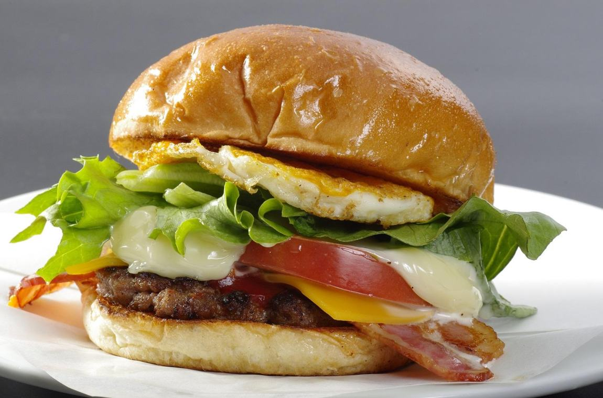
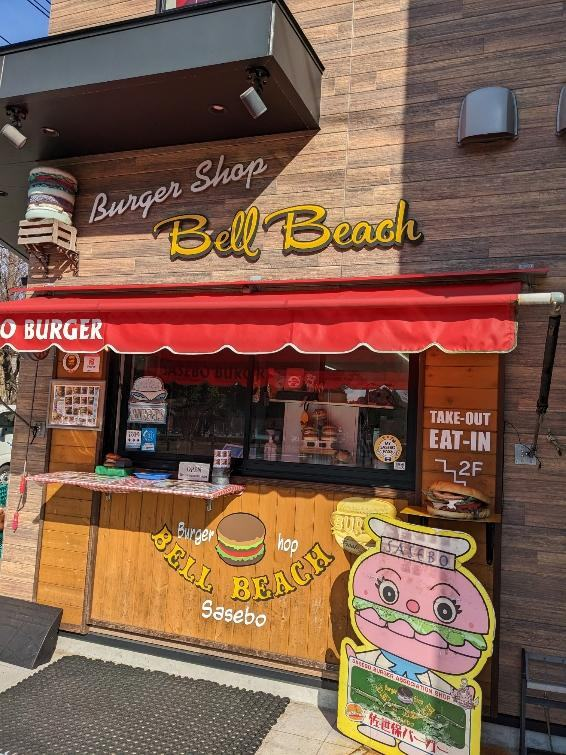
| 営業時間 | 11:00〜17:00 |
|---|---|
| 定休日 | 水曜日（祝日は除く） |
| 住所 | 長崎県佐世保市鹿子前町942-3 |
| 予約 | 席の予約は不可。持ち帰り・まとめ注文は電話で受け付ける（団体50名まで）。 — ☎ 0956-28-7718 ／ 公式サイト |
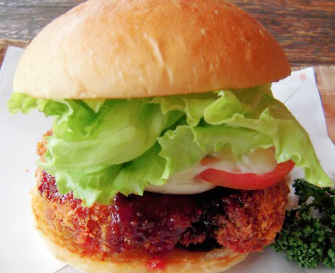
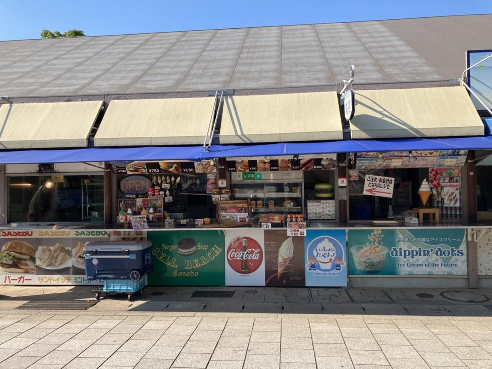
| 営業時間 | 10:00〜17:00 |
|---|---|
| 定休日 | 不定休 |
| 住所 | 長崎県佐世保市鹿子前町1058-1 九十九島パールシーリゾート内 |
| 予約 | 予約不可。基本は持ち帰りで、時間帯により店内飲食も可。 — ☎ 0956-28-0655 ／ 公式サイト |
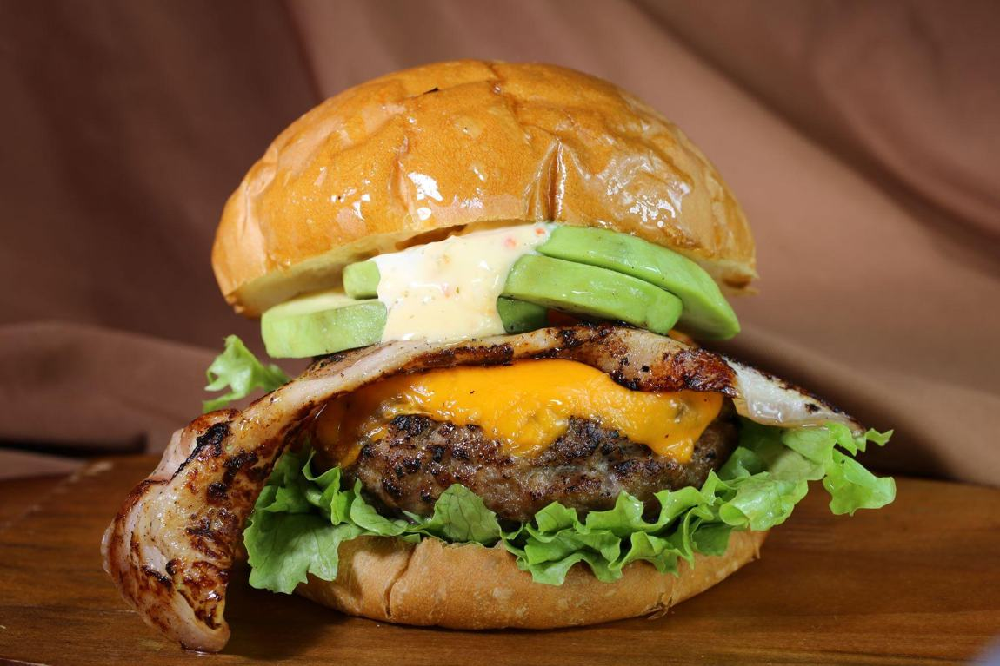
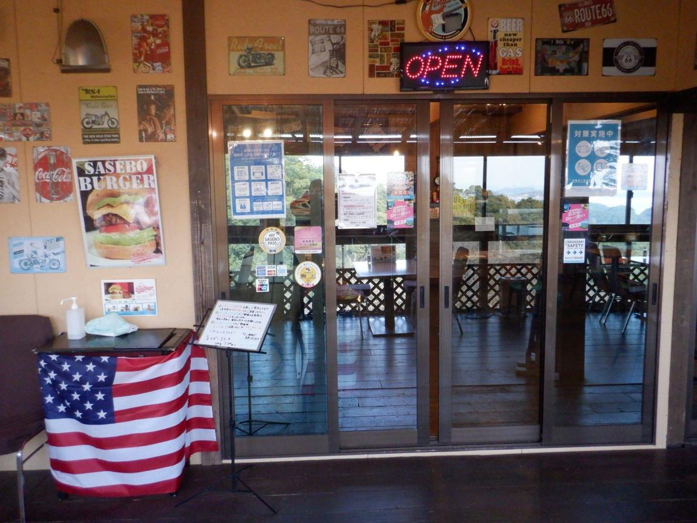
| 営業時間 | 8:00〜17:00（ただし9月は20:00まで、ラストオーダー19:30） |
|---|---|
| 定休日 | 不定休（公式サイトは営業時間・定休日を地図サービスで確認するよう案内。佐世保バーガーマップ2025は無休と記載） |
| 住所 | 長崎県佐世保市船越町190-1 |
| 予約 | 個人の予約は不要。40名程度までの団体は事前連絡が必要（FAX 0956-28-5522 または公式サイトの問い合わせ）。 — ☎ 0956-28-5533 ／ 公式サイト |
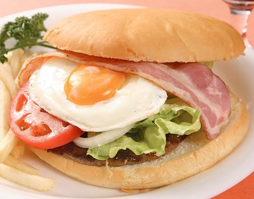
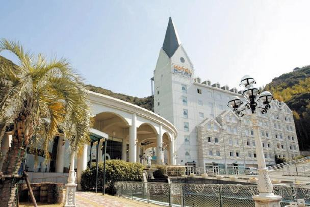
| 営業時間 | 朝食 7:00〜10:00（最終入店9:30）／ランチ 11:30〜15:00（ラストオーダー14:30）／ティータイム 15:00〜17:00／ディナー 平日17:00〜22:00（ラストオーダー21:00）・土日祝17:00〜22:00（ラストオーダー21:15）（2026年11月14日のリニューアル後。公式サイト） |
|---|---|
| 定休日 | 公式サイトに定休日の記載が無い（臨時休業は公式サイトのお知らせで告知。直近では2026年11月24日のランチ＆ティータイムが貸切のため休業） |
| 住所 | 長崎県佐世保市南風崎町449 |
| 予約 | 電話（0956-59-3939）で問い合わせ・予約ができる。団体の貸切が入る日はランチ等が休業になることがある。 — ☎ 0956-59-3939 ／ 公式サイト |
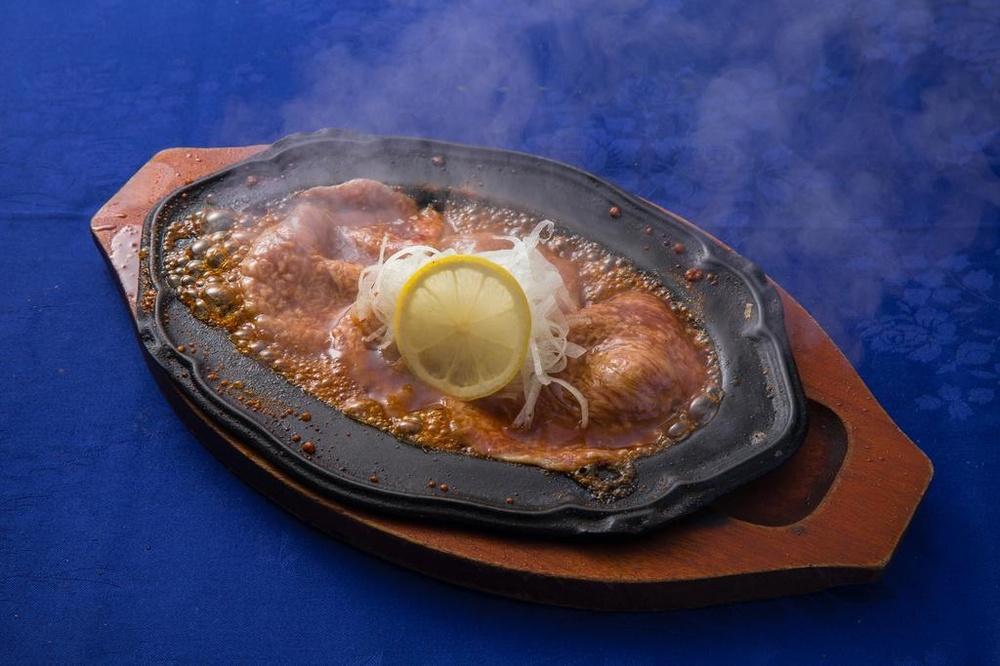
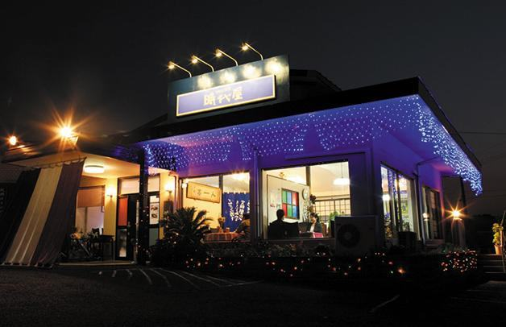
| 営業時間 | ランチ 11:00～14:00（OS）／ディナー 17:00～21:00（OS）（佐世保観光コンベンション協会 2026-11-22 取得）。※公式サイトが「夜の営業時間を当面の間変更しております」と告知しているため、夜は要電話確認。 |
|---|---|
| 定休日 | 月曜日（祝日の場合は翌日）（佐世保観光コンベンション協会 2026-11-22 取得） |
| 住所 | 長崎県佐世保市吉福町172-1 |
| 予約 | 電話（0956-30-7040）。公式サイトは問い合わせフォームのメールが届かない状態と告知しており、電話での連絡を求めている。予約の可否そのものは出典に明記が無く未確認。 — ☎ 0956-30-7040 ／ 公式サイト |
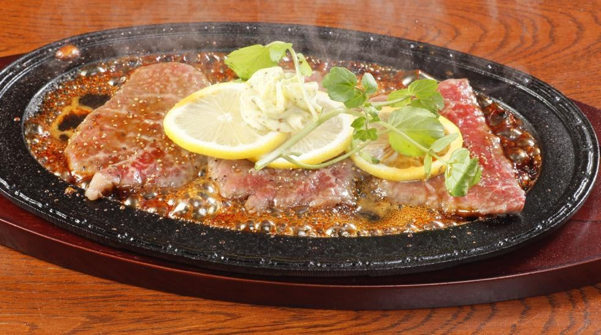
| 営業時間 | ランチ 11:30～14:30（OS）／14:30～17:30 は喫茶のみ／ディナー 17:30～19:45（OS）。※月曜日・水曜日はランチタイムのみの営業、水曜日はメニューを短縮して営業（公式サイト 2026-11-22 取得）。佐世保観光コンベンション協会の表記は「11:30～20:30（OS19:45）」で公式サイトと食い違うため、公式サイトの値を採った。 |
|---|---|
| 定休日 | 不定休（佐世保観光コンベンション協会 2026-11-22 取得）。公式サイトは定休日を明記せず、月曜日・水曜日はランチタイムのみと記載している。 |
| 住所 | 長崎県佐世保市栄町5-9 サンクル2番館1階 |
| 予約 | 電話（0956-24-4522）。公式サイトが「ご予約・お問い合わせ TEL 0956-24-4522」と案内している。団体は要相談（佐世保観光コンベンション協会）。 — ☎ 0956-24-4522 ／ 公式サイト |
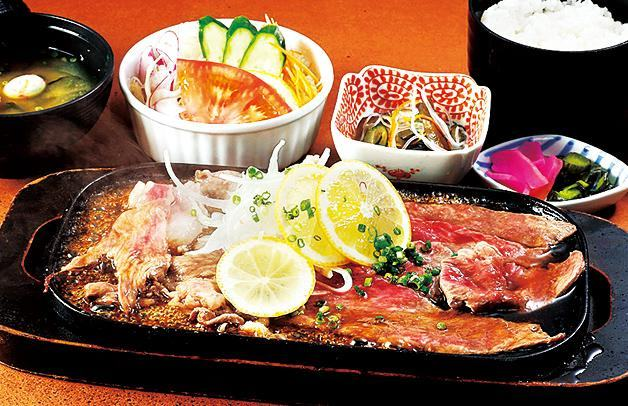
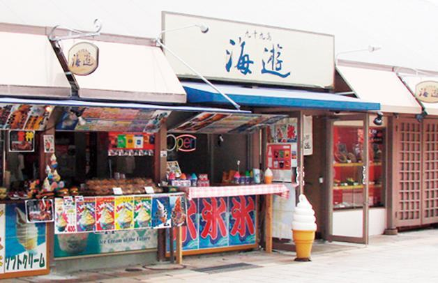
| 営業時間 | 11:00～17:00（OS16:00）。ディナーの予約が入った場合は21:00まで（要予約）。売店は10:00～17:00（公式サイト 2026-11-22 取得）。※九十九島パールシーリゾートのテナント紹介は「平日11:00～15:30（OS）／土日祝11:00～17:00（OS）」としており食い違うため、店自身の公式サイトの値を採った。 |
|---|---|
| 定休日 | 不定休（佐世保観光コンベンション協会 2026-11-22 取得）。公式サイトは定休日を明記していない。 |
| 住所 | 長崎県佐世保市鹿子前町1058-1 |
| 予約 | 電話（0956-28-0655）。ディナーは要予約で、予約が入った場合のみ21:00まで営業する（公式サイト）。団体は80名まで（佐世保観光コンベンション協会）。 — ☎ 0956-28-0655 ／ 公式サイト |
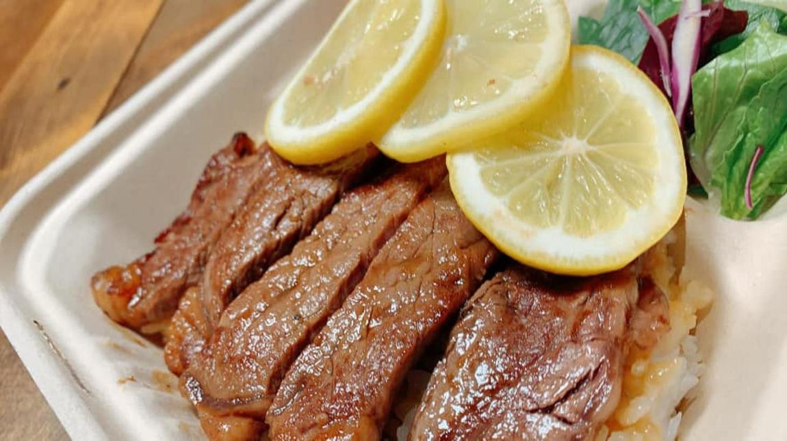
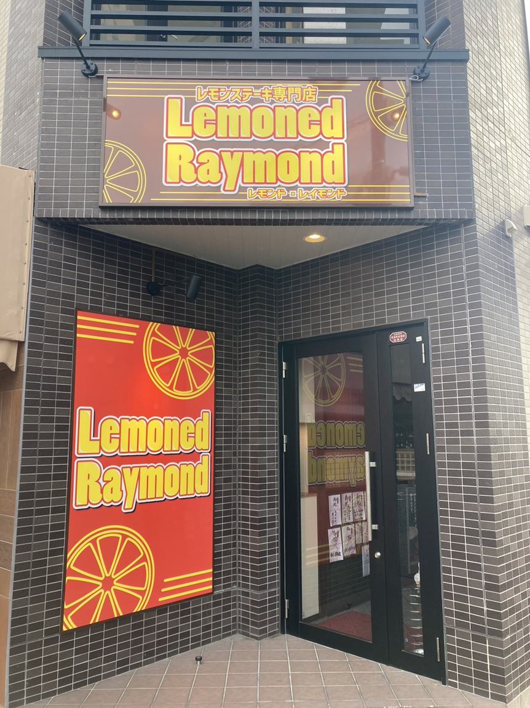
| 営業時間 | 11:30～14:30／17:30～22:00（公式サイトの店舗情報 2026-11-22 取得） |
|---|---|
| 定休日 | 火曜日（公式サイトの店舗情報 2026-11-22 取得） |
| 住所 | 長崎県佐世保市下京町7-15 一休ビル1F |
| 予約 | 予約の可否・方法は公式サイトにも佐世保観光コンベンション協会の店舗ページにも記載が無く未確認。問い合わせ先の電話は 0956-59-8959。 — ☎ 0956-59-8959 ／ 公式サイト |
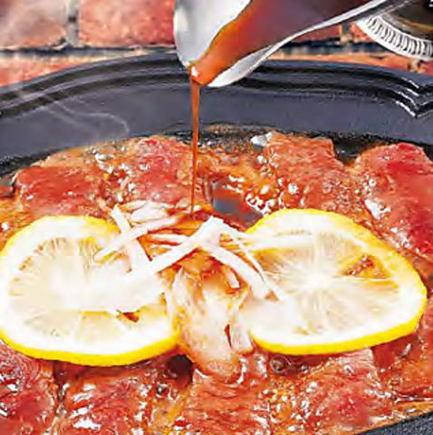
| 営業時間 | 11:00～21:30（料理・ドリンクとも L.O. 21:00）（ホットペッパーグルメの店舗ページ 2026/10/27 更新・2026-11-22 取得。公式サイトの店舗紹介も「開店11:00／OS21:00／閉店21:30」で一致） |
|---|---|
| 定休日 | なし（ホットペッパーグルメの店舗ページ 2026/10/27 更新・2026-11-22 取得） |
| 住所 | 長崎県佐世保市本島町3-5（2F・3F） |
| 予約 | 電話（0956-22-1600）のほか、ホットペッパーグルメのネット予約に対応（即予約は来店日当日19時まで受付）。12名～50名の貸切座敷個室、8名～24名のテーブル個室がある（ホットペッパーグルメの店舗ページ 2026/10/27 更新）。 — ☎ 0956-22-1600 ／ 公式サイト |
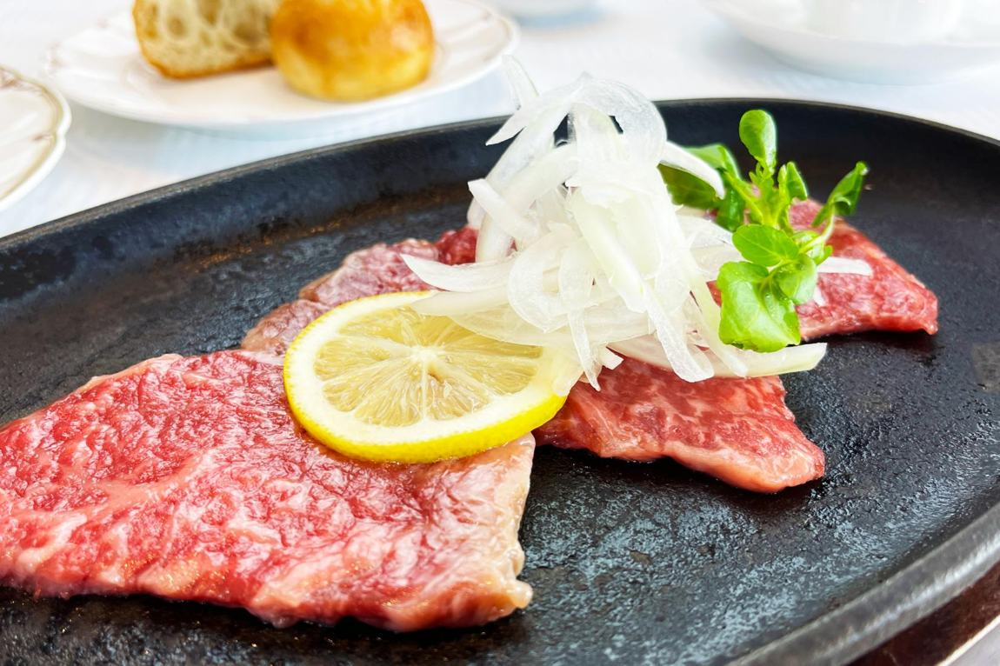
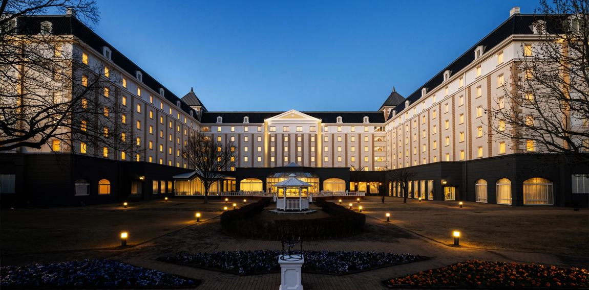
| 営業時間 | 朝食 6:45～10:00（最終入店9:30）／ランチ 11:30～14:30（最終入店14:00）／ディナー 17:30～21:00（ラストオーダー20:00）（ホテル公式サイトのレストランページ 2026-11-22 取得）。ディナーはコースの日とハーフブッフェの日があり、公式サイトのディナーカレンダーで確認が必要。 |
|---|---|
| 定休日 | 水曜日（ディナーのみ）（佐世保観光コンベンション協会 2026-11-22 取得）。ホテル公式サイトのラヴァンドルのページには定休日の記載が無い。※ホテルは2027年1月12日（火）チェックアウト後～1月15日（金）に全館休館する（公式サイト 2026/06/25 付）。 |
| 住所 | 長崎県佐世保市ハウステンボス町6番地 |
| 予約 | 電話（レストラン予約 0956-58-0239・受付10:00～17:30）またはホテル公式サイトのレストラン予約。ディナーセットのプランは前日までの予約が必要（公式サイトのお知らせ 2026/11/04 付）。 — ☎ 0956-58-0239 ／ 公式サイト |
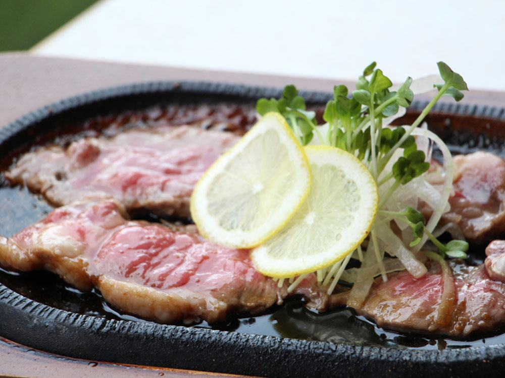
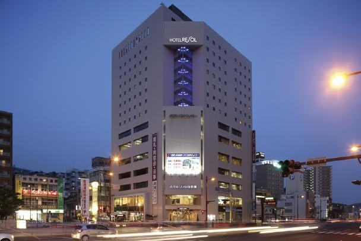
| 営業時間 | 朝食 6:30～9:30（最終入場9:00）毎日営業（ホテル公式サイトのレストランページ 2026-11-22 取得）。ランチはホテル公式サイトでは「団体専用・完全予約制」、佐世保観光コンベンション協会の店舗ページでは「11:30～14:00（OS13:30）」と食い違う。ディナー営業は終了している。 |
|---|---|
| 定休日 | 朝食は毎日営業（ホテル公式サイト 2026-11-22 取得）。ランチは土曜日・日曜日・祝日が休み（佐世保観光コンベンション協会 2026-11-22 取得）。 |
| 住所 | 長崎県佐世保市白南風町8-17（JR佐世保駅前） |
| 予約 | ランチはホテル公式サイトによれば団体専用・完全予約制。電話（0956-24-9269）で確認・予約する。個人の昼の利用可否は出典が食い違うため要電話確認。 — ☎ 0956-24-9269 ／ 公式サイト |
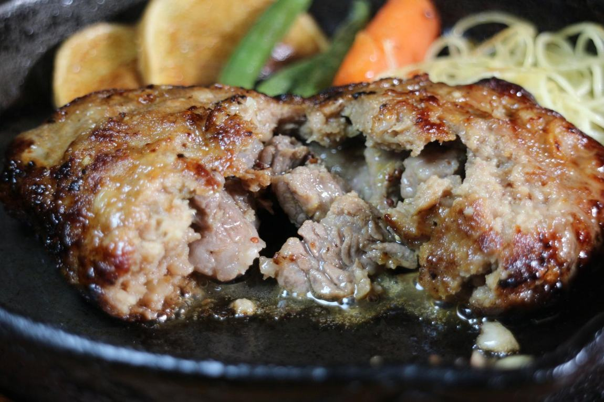
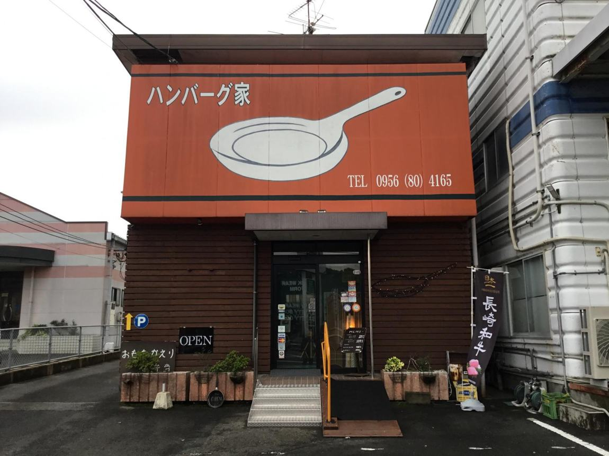
| 営業時間 | ランチ 11:00～15:00（OS14:30）／ディナー 17:30～21:00（OS20:30）（佐世保観光コンベンション協会 2026-11-22 取得）。※材料がなくなった場合は早く終わることがある。 |
|---|---|
| 定休日 | 不定休。12月30日夜～1月3日は休み（佐世保観光コンベンション協会 2026-11-22 取得） |
| 住所 | 長崎県佐世保市卸本町21-334 |
| 予約 | 予約の可否・方法は公式サイトにも佐世保観光コンベンション協会の店舗ページにも記載が無く未確認。問い合わせ先の電話は 0956-80-4165。 — ☎ 0956-80-4165 ／ 公式サイト |
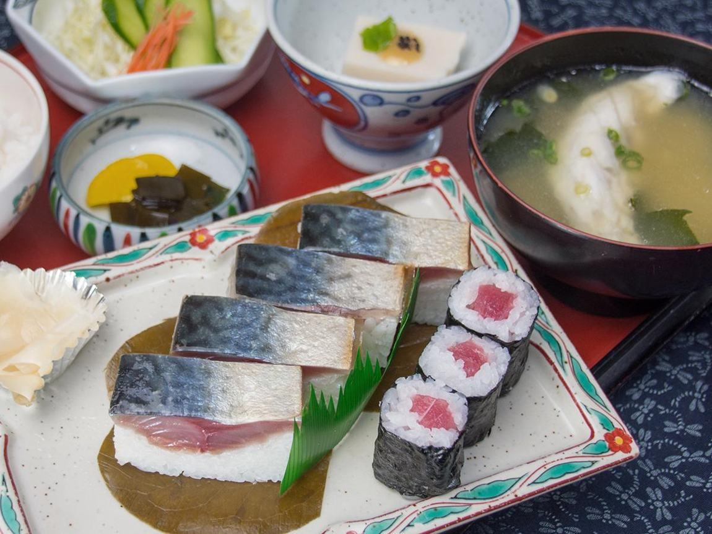
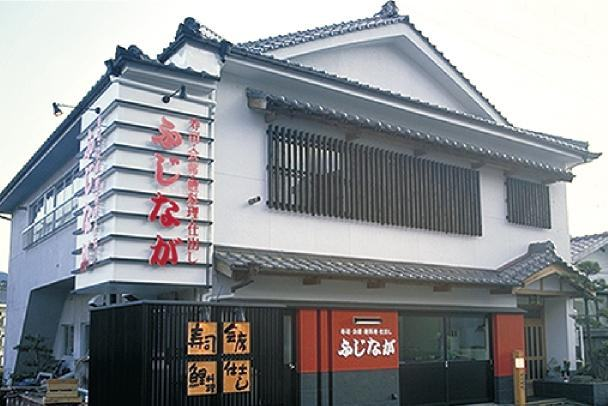
| 営業時間 | ランチ 11:30〜14:00（オーダーストップ13:30）／ディナー 17:00〜21:00（オーダーストップ20:30）※夜および土・日・祝は前日までの予約制 |
|---|---|
| 定休日 | 月曜日・お盆・年末年始 |
| 住所 | 長崎県佐世保市大野町50-14 |
| 予約 | 電話（0956-49-2487）。夜と土・日・祝は前日までの予約が必要で、1人3,000円以上かつ総額12,000円以上という条件がある。かから葉すしも前日までの予約 — ☎ 0956-49-2487 ／ 公式サイト |
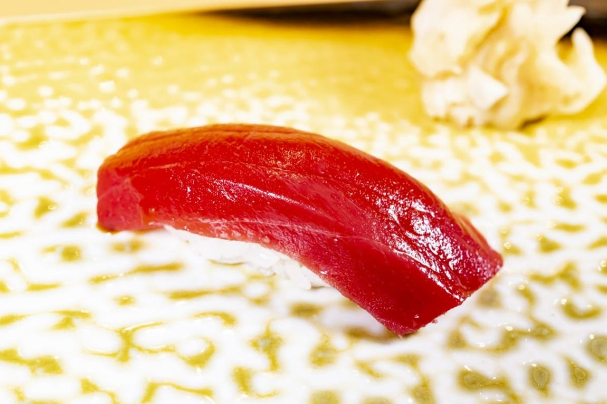
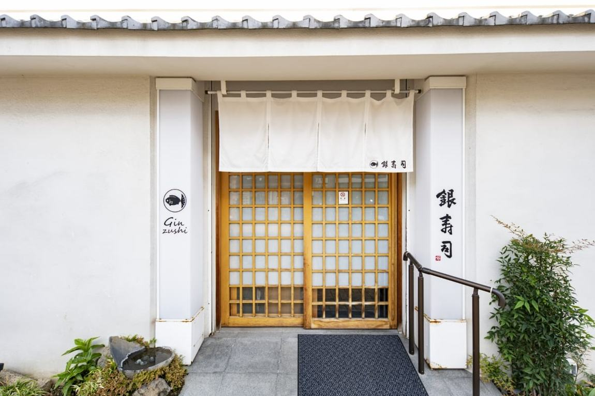
| 営業時間 | 月・水・木・金・土 ランチ11:30〜14:00（ラストオーダー13:30）／ディナー17:30〜22:00（ラストオーダー21:00）、日曜 ランチ11:30〜14:00（ラストオーダー13:30）／ディナー17:30〜21:00（ラストオーダー20:00） |
|---|---|
| 定休日 | 火曜日（佐世保観光サイトの掲載では火曜日・魚市休市日・ほか不定休） |
| 住所 | 長崎県佐世保市上京町7-8 |
| 予約 | 公式サイトからのネット予約（TableCheck）と電話（0956-22-6832）。当日の予約、15名以上の予約、子ども連れの予約は電話のみ。九十九島とらふぐ料理は予約制 — ☎ 0956-22-6832 ／ 公式サイト |
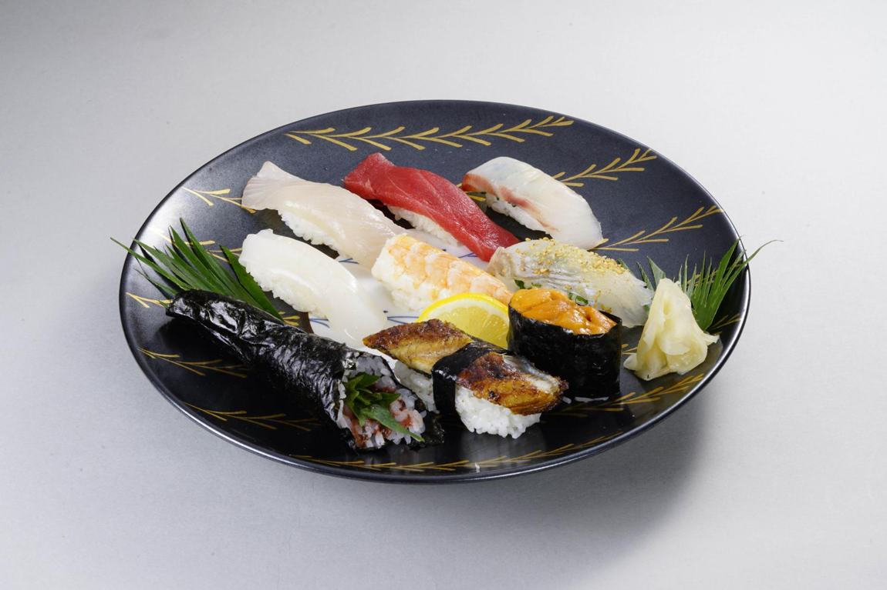
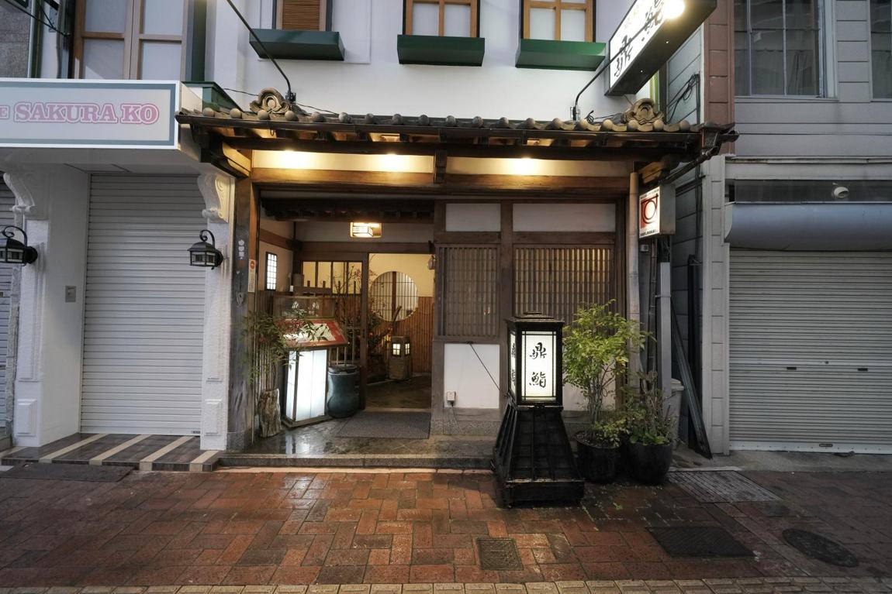
| 営業時間 | 17:00〜翌0:00（ぐるなびの店舗公式ページは月・水〜日 17:00〜24:00、ラストオーダー23:30と記載） |
|---|---|
| 定休日 | 火曜日 |
| 住所 | 長崎県佐世保市塩浜町2-2 |
| 予約 | 電話（0956-22-8308）。座敷は2名から16〜20名の個室として使え、商談・接待・会合の利用が多い — ☎ 0956-22-8308 ／ 公式サイト |
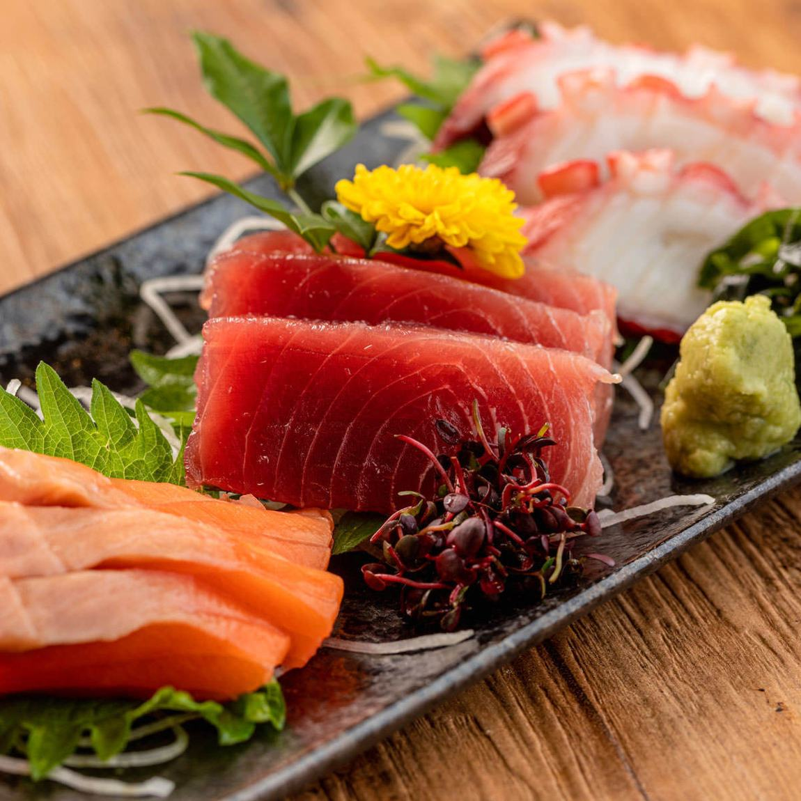
| 営業時間 | 月〜金・祝前日 17:00〜翌0:00／土・日・祝 15:00〜翌0:00 |
|---|---|
| 定休日 | なし |
| 住所 | 長崎県佐世保市下京町6-15 |
| 予約 | ホットペッパーグルメのネット予約（即予約は来店日当日22時まで、リクエスト予約は前日17時まで）と電話。公式に出ている番号は転送番号の050-5459-5457のみ。活イカの姿造りのコースは要予約。コース予約は来店2日前23時以降のキャンセルに100％のキャンセル料がかかる — ☎ 050-5459-5457 ／ 公式サイト |
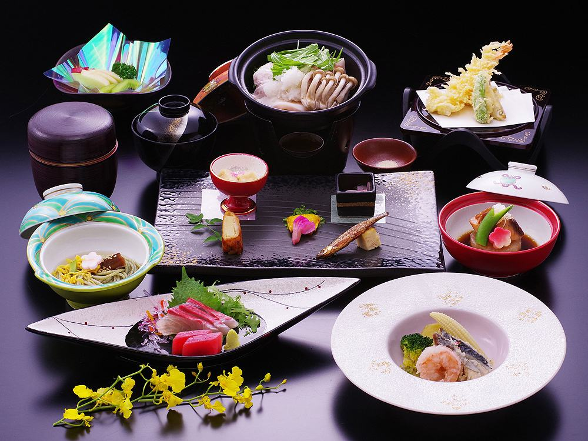
| 営業時間 | 【ホテル公式サイト（2025年9月更新）】水〜土曜 17:30〜21:00（日〜火曜は休み）／【店の公式サイト】ランチ11:30〜14:00、ディナー17:00〜22:00（ラストオーダー21:00）。二つの出典が食い違うため、来店前に0956-25-6261へ電話で確認 |
|---|---|
| 定休日 | 【ホテル公式サイト】日・月・火曜日／【店の公式サイト】火・水曜日と年末年始。出典が食い違うため、来店前に電話で確認 |
| 住所 | 長崎県佐世保市三浦町4-1 サセボグリーンホテルpremier 1F |
| 予約 | 電話（0956-25-6261）。ふぐ料理は予約制。個室は最大10名、広間は最大50名、団体は最大40名。宴会・法要の営業は休止中 — ☎ 0956-25-6261 ／ 公式サイト |
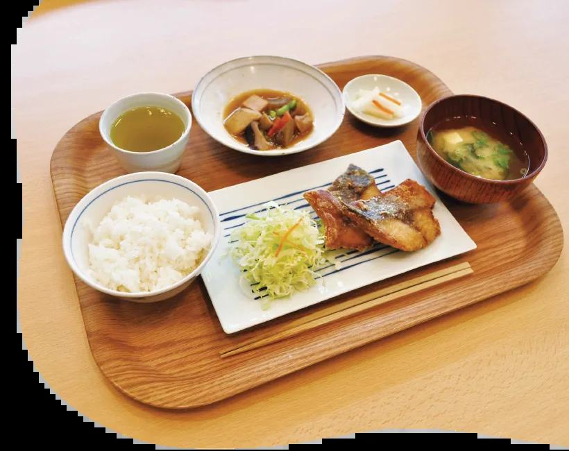
| 営業時間 | 7:00〜14:00（ラストオーダー13:30） |
|---|---|
| 定休日 | 毎週月曜日、佐世保魚市場の休市日（主に日曜・祝日） |
| 住所 | 長崎県佐世保市相浦町1563 佐世保魚市場ビル3F |
| 予約 | 公式サイトに予約の案内は無く、基本は予約なしの来店。問い合わせは電話（0956-48-8455） — ☎ 0956-48-8455 ／ 公式サイト |
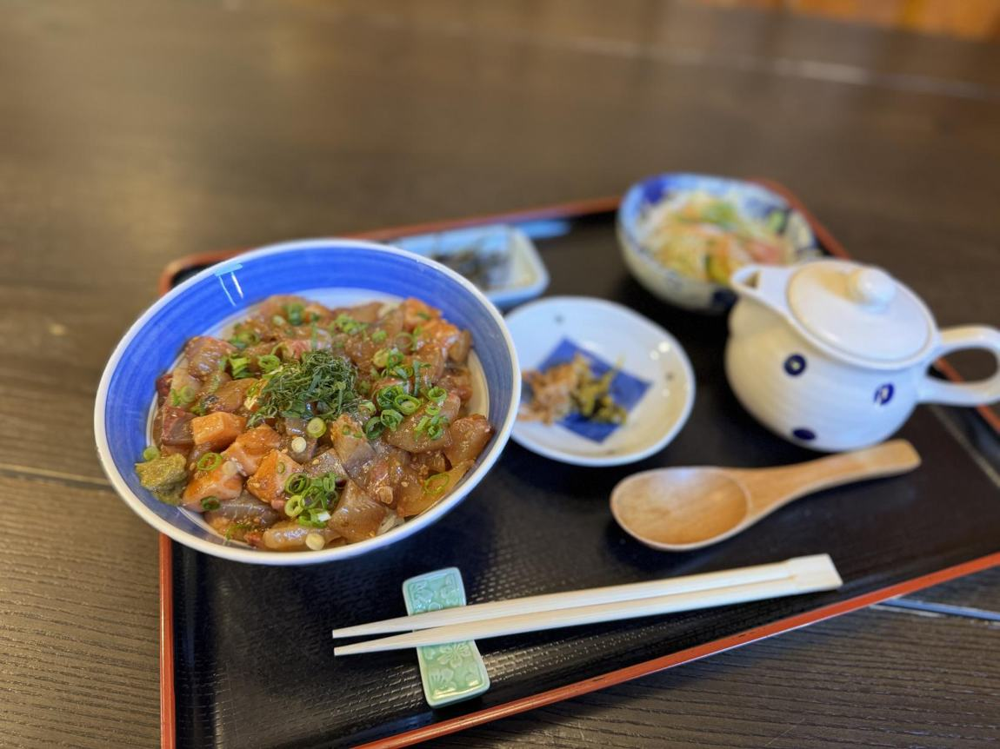
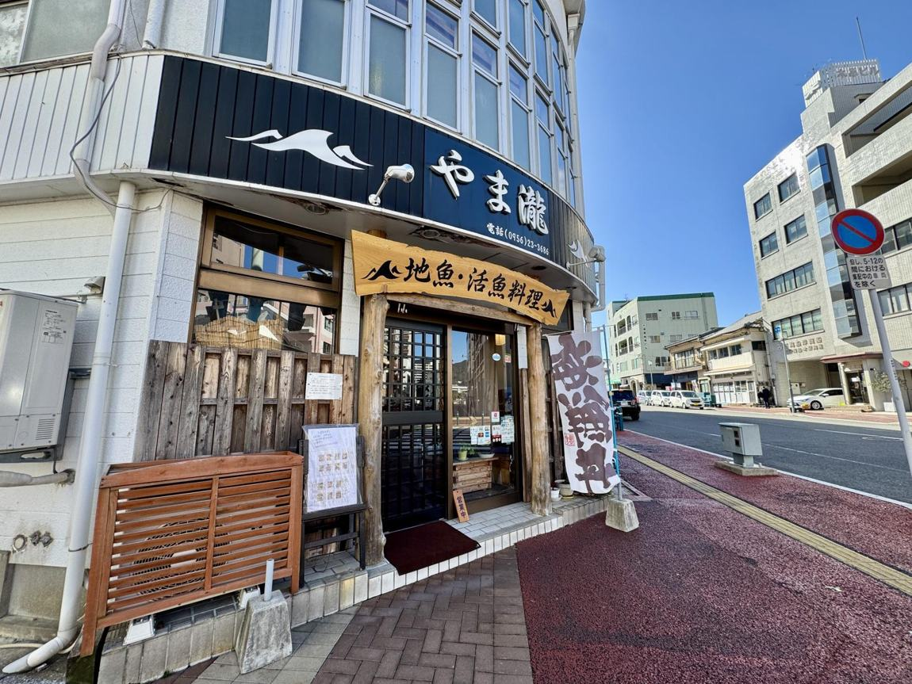
| 営業時間 | ランチ 11:45〜14:30（ラストオーダー13:45）／ディナー 17:00〜21:30（ラストオーダー21:00）※ランチは材料がなくなり次第終了 |
|---|---|
| 定休日 | 日曜日・祝日の月曜日・お盆・正月、ほか不定休（月曜が祝日の場合は日曜営業。月曜祝日以外の祝日および月曜は夜のみ営業） |
| 住所 | 長崎県佐世保市万津町1-1 |
| 予約 | 電話（0956-23-3686）。最大収容人数26名 — ☎ 0956-23-3686 |
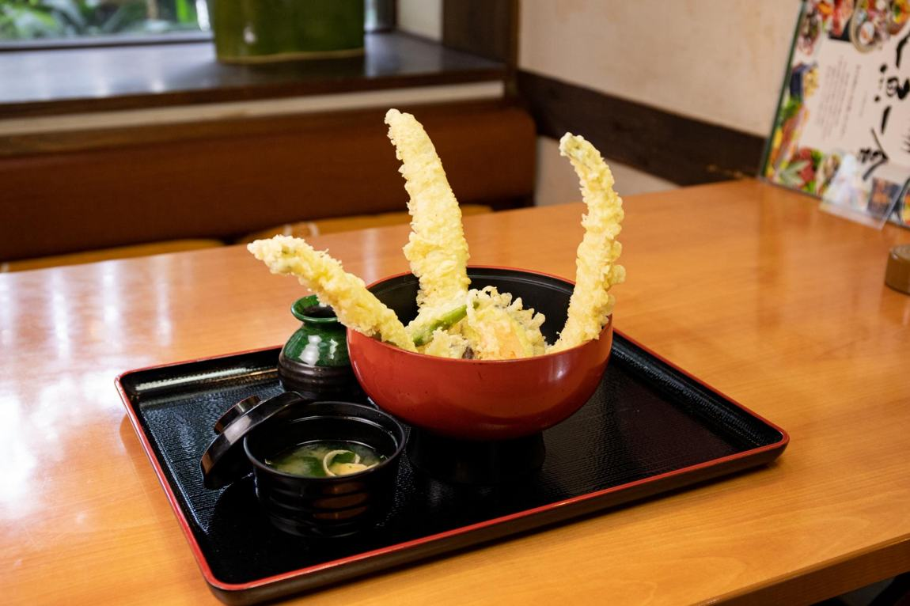
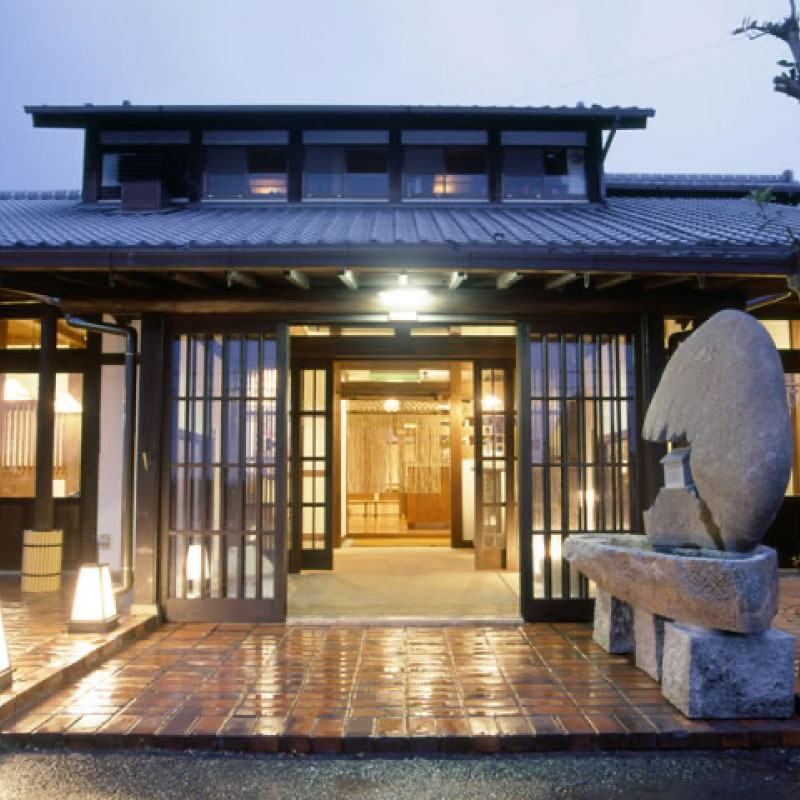
| 営業時間 | 11:30〜14:30（15:00〜17:00は準備中）／17:00〜20:30（21:00オーダーストップ、21:30閉店） |
|---|---|
| 定休日 | 12月30日〜1月1日 |
| 住所 | 長崎県佐世保市針尾東町2371-1 西海橋物産館内 |
| 予約 | 電話（0956-20-2525）。団体は10〜50名まで受け入れ、マイクロバスでの送迎も相談できる — ☎ 0956-20-2525 ／ 公式サイト |
| 営業時間 | 9:00〜17:00（オーダーストップ16:00） |
|---|---|
| 定休日 | 不定休（ホットペッパーグルメの掲載では盆・年末年始） |
| 住所 | 長崎県佐世保市船越町944 |
| 予約 | 予約の案内は公式の掲載に無く、基本は予約なしの来店。団体で行くときは電話（0956-28-0602）で確認したい。支払いはカード不可の掲載があるので現金を用意する — ☎ 0956-28-0602 ／ 公式サイト |
| 営業時間 | 11:00～22:00（L.O.21:00）。ランチタイムは11:00～14:00 |
|---|---|
| 定休日 | 12月31日・1月1日 |
| 住所 | 長崎県佐世保市潮見町12-7 佐世保ワシントンホテル1階 |
| 予約 | 個室のため前日までに電話（0956-32-8011）で予約が要る。海軍さんのビーフシチューと入港ぜんざいも要予約。 — ☎ 0956-32-8011 ／ 公式サイト |
| 営業時間 | モーニング6:30～10:00（L.O.9:30）／ランチ11:30～15:00（L.O.14:30）／ディナー17:00～22:00（L.O.21:30） |
|---|---|
| 定休日 | 不定休（ホットペッパーグルメの掲載。佐世保観光コンベンション協会の掲載は「年中無休」） |
| 住所 | 長崎県佐世保市上京町3-2 アートホテル佐世保セントラル2階 |
| 予約 | 電話（0956-25-0001、ホテル代表）かホットペッパーグルメのネット予約。即時予約は来店日の前日21時まで、リクエスト予約は3日前まで。 — ☎ 0956-25-0001 ／ 公式サイト |
| 営業時間 | 11:30～23:00（料理L.O.22:00）。水曜日は昼の営業を休み17:00から |
|---|---|
| 定休日 | 12月31日・1月1日 |
| 住所 | 長崎県佐世保市下京町4-4 |
| 予約 | 電話（0956-23-3933、ささいずみグループ総合予約）。個室14室、大広間は最大80名まで。 — ☎ 0956-23-3933 ／ 公式サイト |
| 営業時間 | 11:30～21:00（ランチ11:30～14:00／ディナー16:30～21:00） |
|---|---|
| 定休日 | 水曜日 |
| 住所 | 長崎県佐世保市瀬戸越3-293-8 |
| 予約 | 2日前までの完全予約制。電話（0956-40-8141）か公式サイトのWEB予約。1組2名から6名まで。 — ☎ 0956-40-8141 ／ 公式サイト |
| 営業時間 | ランチ11:30～15:00（L.O.14:30）／ディナー17:30～22:00（L.O.21:30） |
|---|---|
| 定休日 | 年中無休 |
| 住所 | 長崎県佐世保市鵜渡越町510 弓張の丘ホテル4階 |
| 予約 | 直通電話（0956-26-0802、受付10:30～21:00）。贅沢会席は2日前までの予約制で2名から。 — ☎ 0956-26-0802 ／ 公式サイト |
| 営業時間 | ディナー17:00～23:00（L.O.22:00）。昼の営業は公式サイトの案内では現在休止中。ホットペッパーグルメの掲載は17:00～22:00（料理L.O.21:00） |
|---|---|
| 定休日 | 日曜日、第1・第3月曜日 |
| 住所 | 長崎県佐世保市三浦町5-7-15 |
| 予約 | 電話（0956-37-6556）。ホットペッパーグルメのリクエスト予約は来店日の前日17時まで。 — ☎ 0956-37-6556 ／ 公式サイト |
| 営業時間 | レストラン国見 11:30～14:30（14:00 L.O.）／湯上がり茶屋 11:30～17:00（料理L.O.15:00。金・土・日・祝のみ営業） |
|---|---|
| 定休日 | 館内メンテナンスのため全館休館する日がある（公式サイトの案内では11月11日・12月9日・1月13日の各水曜） |
| 住所 | 長崎県佐世保市世知原町上野原316 |
| 予約 | レストラン国見の単品メニューは予約なしでも利用できる。昼の会食プラン（特別会席・山暖簾会席・くにみコース・なごみコース）は予約制。電話は0956-76-2900。 — ☎ 0956-76-2900 ／ 公式サイト |
| 営業時間 | 月〜土・祝日・祝前日 17:00〜翌0:00（料理L.O. 23:00／ドリンクL.O. 23:00） |
|---|---|
| 定休日 | 日曜日 |
| 住所 | 長崎県佐世保市下京町7-12 田中店舗1階 |
| 予約 | 予約可。電話（080-2625-2199）のほか、ホットペッパーグルメのネット予約が来店日当日21時まで受け付ける。公式サイトは無い。 — ☎ 080-2625-2199 |
| 営業時間 | 月〜土・祝日・祝前日 12:00〜15:00（料理・ドリンクL.O. 14:30）／18:00〜翌1:00（料理・ドリンクL.O. 翌0:30）、日曜日 18:00〜翌1:00（料理・ドリンクL.O. 翌0:30） |
|---|---|
| 定休日 | 無休（ただし昼の営業は日曜日が休み） |
| 住所 | 長崎県佐世保市上京町6-11 |
| 予約 | 予約可。電話（090-9348-0701）のほか、ホットペッパーグルメのネット予約が来店日翌0時まで（リクエスト予約は前日17時まで）。公式サイトは無い。 — ☎ 090-9348-0701 |
| 営業時間 | 月〜日・祝日・祝前日 17:00〜翌1:00（料理L.O. 翌0:00／ドリンクL.O. 翌0:30） |
|---|---|
| 定休日 | 無休 |
| 住所 | 長崎県佐世保市下京町4-3 |
| 予約 | 予約可。電話（0956-25-9788、問い合わせは12:00から）のほか、ホットペッパーグルメのネット予約が来店日当日21時まで（リクエスト予約は前日17時まで）。公式サイトは無い。 — ☎ 0956-25-9788 |
| 営業時間 | 月〜日・祝日・祝前日 17:00〜翌0:00（料理L.O. 23:00／ドリンクL.O. 23:30）。公式サイトの店舗案内は16:00〜23:30（オーダーストップ）24:00閉店と記載。 |
|---|---|
| 定休日 | 不定休（電話で確認） |
| 住所 | 長崎県佐世保市塩浜町2-16 2階 |
| 予約 | 予約可。電話（0956-37-8894、問い合わせは15:00〜22:00）のほか、ホットペッパーグルメのネット予約が来店日当日22時まで（リクエスト予約は前日17時まで）。コース予約は当日16時以降のキャンセルでコース料金の60％がかかる。 — ☎ 0956-37-8894 ／ 公式サイト |
| 営業時間 | 月〜日・祝日・祝前日 18:00〜翌2:00（料理L.O. 翌1:30／ドリンクL.O. 翌1:30） |
|---|---|
| 定休日 | 無休 |
| 住所 | 長崎県佐世保市塩浜町1-1 グランパレビルB1 |
| 予約 | 予約可。電話（0956-36-9075）のほか、ホットペッパーグルメのネット予約が来店日当日23時まで（リクエスト予約は前日17時まで）。公式サイトは無い。 — ☎ 0956-36-9075 |
| 営業時間 | 月・火・木〜土・祝前日 17:00〜翌2:00（料理L.O. 翌1:30／ドリンクL.O. 翌1:30） |
|---|---|
| 定休日 | 水曜日・日曜日・祝日 |
| 住所 | 長崎県佐世保市京坪町6-7 松美屋ビル1F 102 |
| 予約 | 予約可。ただし電話番号はホットペッパーグルメの店舗ページで非公開とされているため、ホットペッパーグルメのネット予約（来店日当日22時まで）を使う。公式サイトは無い。 |
| 営業時間 | 火・土・日 11:00〜22:00／水〜金 17:00〜22:00 |
|---|---|
| 定休日 | 月曜日 |
| 住所 | 長崎県佐世保市常盤町9-19 3階 |
| 予約 | 予約可。電話（0956-55-5094）のほか、ホットペッパーグルメのネット予約が来店日当日20時まで。公式サイトは無い。 — ☎ 0956-55-5094 |
| 営業時間 | 1階 16:00〜22:00（料理L.O. 21:00／ドリンクL.O. 21:30）／2階 16:00〜21:00（料理・ドリンクL.O. 20:30） |
|---|---|
| 定休日 | 公式サイトに記載が無い（電話で確認） |
| 住所 | 長崎県佐世保市下京町4-13 |
| 予約 | コース（注連蔵2,000円コース）は予約を受ける。電話0956-23-3933はささいずみグループの代表番号なので、かけるときは「注連蔵」と店名を伝える。予約はすべて本予約の扱いで仮予約は受けない。人数の変更は昼（〜16:00）の予約なら前日21:00まで、夜（16:00〜）の予約なら当日12:00まで。 — ☎ 0956-23-3933 ／ 公式サイト |
| 営業時間 | 月〜土 18:00〜翌0:00（料理L.O. 23:30／ドリンクL.O. 23:30） |
|---|---|
| 定休日 | 日曜日 |
| 住所 | 長崎県佐世保市上京町7-6 |
| 予約 | 予約可。電話（0956-22-6030）のほか、ホットペッパーグルメのネット予約が来店日当日21時まで（リクエスト予約は前日17時まで）。公式サイトは無い。 — ☎ 0956-22-6030 |
| 営業時間 | 12:00〜19:00（夜はドリンクメニューのみの提供。るるぶ&more. の店舗情報は『12〜19時』、ホットペッパーグルメの無料掲載欄は『11:00〜22:00』と食い違うため、来店前に電話確認が確実） |
|---|---|
| 定休日 | 火曜日・第1月曜日 |
| 住所 | 長崎県佐世保市勝富町5-21 |
| 予約 | 予約の可否は出典に記載がなく未確認。席数が少ないので電話で確認してから行くのが確実 — ☎ 0956-23-5141 |
| 営業時間 | ランチ 11:30〜14:00（L.O.）／カフェ 12:00〜18:00（L.O.17:30） |
|---|---|
| 定休日 | 木曜日（ランチ営業日は不定期。月ごとの営業日・店休日は公式インスタグラムで告知） |
| 住所 | 長崎県佐世保市広田1丁目36-37 |
| 予約 | 予約の可否は出典に記載がなく未確認。ランチ営業日が不定期なので、来店前に電話するか公式インスタグラムの営業日カレンダーを見る — ☎ 0956-88-7186 |
| 営業時間 | 10:00〜18:00（L.O.17:30）。月刊ならでわ!の店舗データは『10:00〜20:00（OS19:30）』だが、2026年の取材記事と公式インスタグラムのプロフィールはいずれも18:00までとしているので後者を採った |
|---|---|
| 定休日 | 水曜日 |
| 住所 | 長崎県佐世保市指方町2097-5 |
| 予約 | 予約の可否は出典に記載がなく未確認。テラス席を犬連れで使う場合は注意事項があるため事前に電話で確認する — ☎ 0956-88-7495 |
| 営業時間 | 12:00〜19:00 |
|---|---|
| 定休日 | 火曜日・水曜日（月によって営業日が変則になるため、公式インスタグラムの告知を見る） |
| 住所 | 長崎県佐世保市鹿子前町1177-2 |
| 予約 | 予約の可否は出典に記載がなく未確認。全10席ほどのワンオペの店で満席になりやすい |
| 営業時間 | 11:00〜15:00（L.O.14:30）／17:00〜21:00（L.O.20:30） |
|---|---|
| 定休日 | 火曜日（年末年始は公式サイトのお知らせで告知） |
| 住所 | 長崎県佐世保市比良町1-1 |
| 予約 | 予約可。電話 0956-25-3535 で受け付ける。2階の座敷を使う宴会コース（120分飲み放題付き）は要予約で最大45名まで — ☎ 0956-25-3535 ／ 公式サイト |
| 営業時間 | 11:30〜15:00／18:00〜21:00（L.O.）。出張などで昼のみの日があり、当日の営業時間は公式Xで毎朝告知される |
|---|---|
| 定休日 | 不定休（臨時休業あり） |
| 住所 | 長崎県佐世保市下京町10-11 |
| 予約 | 店内の予約の可否は未確認。冷凍商品は公式オンラインショップで注文でき、冷凍メニューの問い合わせは 090-9050-7556 — ☎ 0956-80-4379 ／ 公式サイト |
| 営業時間 | 月・木・金・土・日 11:00〜14:50／16:00〜18:50、火曜 11:00〜14:50（昼のみ） |
|---|---|
| 定休日 | 水曜日 |
| 住所 | 長崎県佐世保市常盤町4-3 |
| 予約 | 予約不可。カウンターのみのため満席時は待つ — ☎ 0956-25-7008 |
| 営業時間 | 火・水曜日 11:00〜15:00／18:00〜23:00、木〜日曜日 11:00〜15:00／18:00〜翌1:00 ※麺が無くなり次第終了 |
|---|---|
| 定休日 | 月曜日（祝日の場合は営業） |
| 住所 | 長崎県佐世保市島地町1-1 |
| 予約 | 予約不可。電話を設置しておらず、問い合わせは公式Instagram（@ore_fullswing）のダイレクトメッセージのみ |
| 営業時間 | 11:00〜17:00（L.O.16:30）※店の公式Instagramのプロフィールの表示。佐世保観光コンベンション協会の飲食店情報は『11:00〜19:00（OS18:30）』で食い違うため、来店前に公式インスタグラムか電話で確認する |
|---|---|
| 定休日 | 不定休（公式インスタグラムのハイライトで告知） |
| 住所 | 長崎県佐世保市鹿子前町979番地 2階（九十九島パールシーリゾート内） |
| 予約 | 予約の可否は出典に記載がなく未確認。店内13席とテラス席のみで、遊覧船の発着時間帯は混む — ☎ 0956-28-7775 |
本ガイドは個人利用目的で作成。掲載情報は2026年11月時点の調査に基づく。写真出典: 各店の公式サイト・公式SNS、および佐世保観光コンベンション協会・地域情報サイト等の掲載写真（著作権は各サイト・各撮影者に帰属）。引用元は店ごとにカード内へ明記。